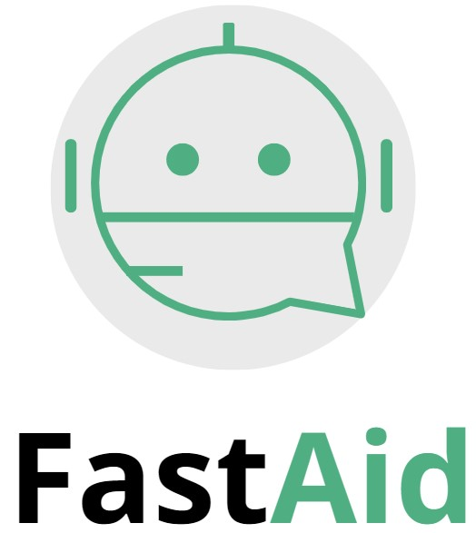

Innovación en servicios de inteligencia artificial
ContáctanosCreamos soluciones de inteligencia artificial hechas a la medida para tu empresa. Nos especializamos en diseñar chatbots que se adaptan a las necesidades únicas de cada negocio, mejorando la interacción con los clientes y optimizando la productividad interna. Nuestros desarrollos incluyen algoritmos avanzados de procesamiento de lenguaje natural (NLP) y aprendizaje automático (machine learning) para garantizar un servicio ágil y efectivo.
Integramos chatbots inteligentes que mejoran la experiencia del usuario desde el primer contacto. Ya sea que necesites asistencia para clientes, automatización de procesos de ventas, soporte técnico o gestión de preguntas frecuentes, nuestros chatbots están diseñados para funcionar de manera fluida con tus sistemas actuales, brindando respuestas rápidas y personalizadas en tiempo real.
Combinamos la inteligencia artificial con el Internet de las Cosas (IoT) para automatizar procesos clave dentro de tu empresa. Nuestro enfoque va más allá del uso tradicional de chatbots, ayudando a integrar dispositivos inteligentes que recopilan y analizan datos en tiempo real para optimizar la logística, la producción, el monitoreo y otras áreas operativas, permitiendo una gestión más eficiente.
Ofrecemos asesoría especializada para guiarte en la transformación digital de tu empresa. Desde la implementación de inteligencia artificial y automatización hasta la optimización de procesos con tecnología de vanguardia, nuestro equipo te ayudará a identificar oportunidades de mejora y a tomar decisiones informadas que impulsen el crecimiento y la competitividad de tu negocio.
En FastAid, estamos comprometidos con ofrecer soluciones tecnológicas que marcan la diferencia. Nuestro equipo está compuesto por expertos en inteligencia artificial, desarrollo de software e Internet de las cosas (IoT).
"FastAid transformó completamente la manera en que manejamos nuestros procesos."
"Gracias a sus soluciones de IA, mejoramos la atención al cliente."
"La implementación de IoT fue clave para nuestro crecimiento."